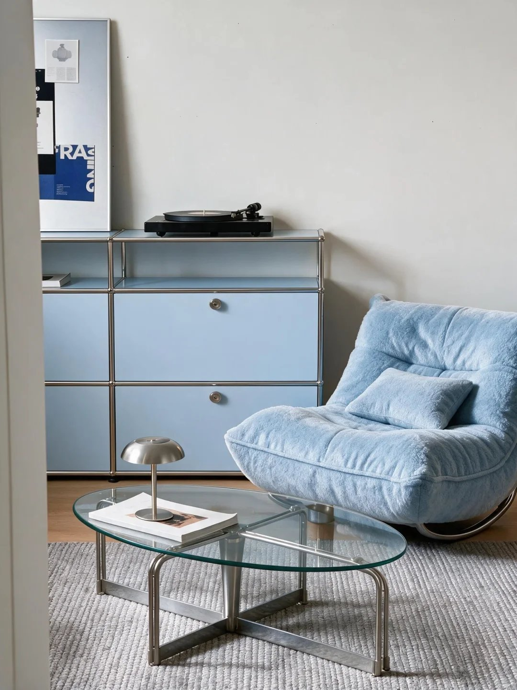

给一条小红书笔记链接，自动完成「笔记抓取 → 文案改写 → 封面图智能生成」全链路。 支持登录墙对抗、本地视觉模型识图、云端 Seedream 图生图，端到端一键出稿。
基于 Dify 1.14 自建实例编排，父子工作流嵌套，云端与本地模型混合调度
真实笔记图片实测：构图与文字严格保真，仅做质感精修与水印净化

从反爬对抗到提示词工程，每一环都是踩坑踩出来的工程方案
针对小红书反爬升级：移动端 UA 轮换 + Cookie 登录态注入 + 登录墙特征检测自动重试，破解数据中心出口 IP 风控。
页面全面 SPA 化后 og 标签失效，改为括号配对精确截取 __INITIAL_STATE__ JSON，清洗 undefined 等非法标记，兼容新旧双版页面结构。
本地下载转 Base64 直喂模型 → Ark 服务端远端拉取 → 文生图兜底，三级通道保证 CDN 限流时依然稳定出图，杜绝"静默降级"。
输出图与原图逐像素比对调校：主体/构图/文字硬性锁定，光影质感定向演绎，平台水印唯一例外移除——在"复刻"与"乱画"之间精准拨档。
Ollama 部署 minicpm-v 于 RTX 4060 本地跑视觉描述（零 token 成本），云端 Seedream 5.0 负责高质量生图，成本与效果兼得。
不止于画布配置：直改 PostgreSQL 工作流图、容器缓存管理、运行链路逆向排查、think 推理链自动清洗节点注入。